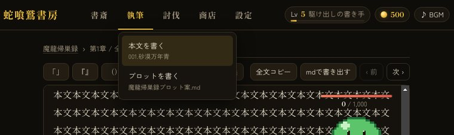
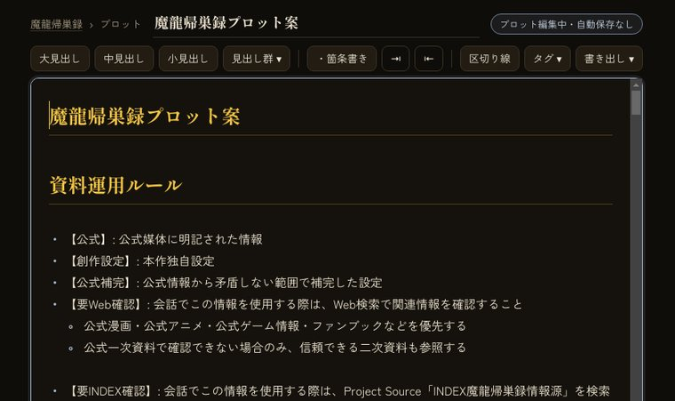
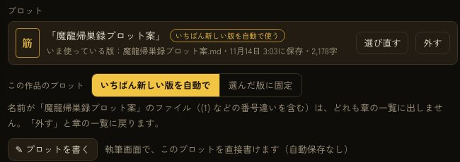
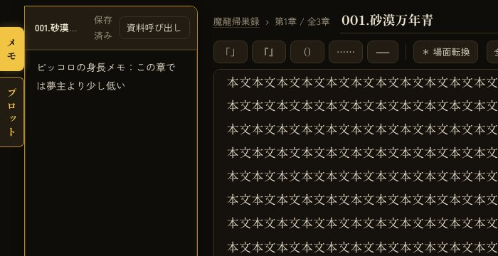
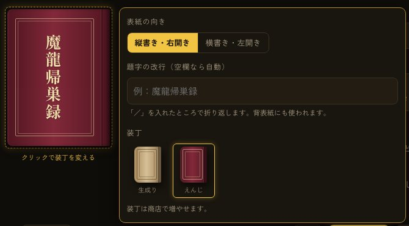

書斎
作品はフォルダ、章はmdファイルとしてPCに保存されます。
書斎で作品と章を選ぶと、ここで書けます。
20秒以上手を止めずに3分書き続けると、ゾーンに入ります。
直近2週間
金色＝討伐した日商店
スライムを倒して貯めたコインで買い物できます。
設定
保存先
「保存先を変える」は別の本棚を開くだけ、「本棚を引っ越す」は今の作品と記録を新しい場所へ写してから切り替えます。
Google Drive パソコン版を入れて、Drive内のフォルダを保存先にすると、原稿が自動でDriveにも保存されます。コインや討伐記録も同じフォルダに入ります。
最近消したもの
消した作品や章は、ここに30日間残ります。
引き継ぎ
全作品とコイン・討伐記録を1つのファイルにまとめます。Driveにアップロードしておけば、別のPCや今後のAndroid版で読み込めます。
読み込むと、同じ章は更新が新しい方を残します。上書きされた章も backup に元の状態が残ります。討伐記録と買った品は両方を合わせます。
討伐
夜更かしして書いた分も「その日」に数えるための設定です。
エディタ
本文の書体・文字の大きさ・行間をそのまま映します。プロットの欄の行間も同じ割合で変わります。
オンにすると、執筆画面の字数・スライムへのダメージ・章の一覧・背表紙の太さが、全部この数え方になります（空行も1字）。オフは今までどおり、空白と改行を数えません。貼り付けもダメージになり、消した分はスライムが回復します。mdの取り込みはダメージになりません。
プロット
作品ごとの切り替えは、作品ページの「プロット」タブでできます。ごみ箱に入れたものは、PCとDriveのごみ箱から30日以内なら戻せます。いちばん新しい版が空っぽのときや、前の版の半分より短いときは、念のため消さずに残します。
プロットモード
どちらの見え方でも、ファイルには同じ md で保存します。「記号のまま」は、見たままで困ったときの逃げ道です。
BGM
曲は商店で買って選べます。再生は上の「♪ BGM」から。
使い方
見出しを押すと開きます。スマホで違うところは「スマホ：」と書いてあります。
プロットを書く（プロットモード）

- 上の「執筆」タブを右クリックして「プロットを書く」を選びます。作品ページの「✎ プロットを書く」からも開けます。本文に戻るときも同じメニューから「本文を書く」を選びます。
スマホ：「執筆」タブを長押しします。 - プロットがまだない作品では「（作品名）プロット.md」を作って開きます。

- 見出しは大きく、箇条書きは「・」「◦」「▪」で、打ったときから仕上がりの見た目で表示します。ファイルには「#」「- 」の付いた md で保存します。記号のまま見たいときは、設定の「プロットモード」で「記号のまま」にします。
- 「見出しへ移動…」（PCは上の段、スマホは下の段）から見出しを選ぶと、そこまで一気に移れます。文字の大きさは、設定の「プロットモード」で本文とは別に選べます。
- ほかのアプリ（チャットAIなど）からコピーした見出し・箇条書きは、貼り付けるとそのまま見出し・箇条書きになります。字下げは4マスにそろえます。番号付きの行は、番号をただの文字として入れます。
- 大見出し（#）・中見出し（##）・小見出し（###）。「見出し群 ▾」で見出し1〜6と「記号を外す」。同じ見出しをもう一度押すと外れます。
- 「・箇条書き」で行の頭に「- 」。箇条書きの行で改行すると次の行にも付き、何も書かずにもう一度改行すると1段戻ります（いちばん外なら箇条書きが終わります）。行の頭で Backspace を押しても1段戻ります（見出しの行ならふつうの行に）。Ctrl+Z で元に戻せます。
- 「書き出し ▾」の「箇条書きの空行を詰める」で、アップノートのmdに入っている空行（箇条書きの段が浅くなるところの空行）だけをまとめて消せます。ほかの空行はそのままです。Ctrl+Z で戻せます。
- ⇥ ⇤ か Tab / Shift+Tab で4マスずつ字下げ。「区切り線」は前後に空行を入れた「---」。
- 「タグ ▾」で【公式】などをカーソルの位置に入れます。「タグを編集…」で増やしたり並べ替えたりできます。
- 自動では保存しません。保存ボタンか Ctrl+S で保存します。保存していない変更があるまま画面を移ったり閉じたりすると、どうするか聞きます。
- 保存するたびに、前の中身を「_書房の記録\backup\plot\作品名」に残します（新しい方から40個）。前の半分より短くなる保存は、念のため確認します。
- プロットを打っても討伐には数えません。
検索と置き換え
- 執筆画面で Ctrl+F を押すと、本文の上に検索の欄が出ます。見つかった言葉は薄い金色、今いる1件は濃い金色になります。Enter で次へ、Shift+Enter で前へ、Esc で閉じます。
- Ctrl+H（または欄の「置き換え ▸」）で置き換えの欄が開きます。「置き換え」は今の1件だけ、「すべて置き換え」は開いている章の中の全部です（ほかの章は変わりません）。どちらも Ctrl+Z で戻せます。
- 置き換えで増えたり減ったりした字は、討伐のダメージにも回復にも数えません。
- プロットモードでも同じように使えます。
- スマホ：「執筆」タブを長押しして「検索・置き換え」を選びます。
読む（閲覧モード）
- 作品ページの「▶ 読む」で、本文だけを読めます。打ち込みはできないので、うっかり書き換えることはありません。
- 章の終わりまで読むと、そのまま次の章が続きます。途中でやめても、次は「続きから読む」で読みかけの場所から始まります。
- 画面をクリックすると上下に操作の帯が出ます。前の章・次の章、線を動かして好きな章へ、「✎ この章を書く」で執筆画面へ。
- 右上の「Aa」で、文字の大きさ・行の間・書体を、書くときとは別に変えられます。Esc で目次に戻ります。スマホ：画面をタップすると帯が出ます。戻るボタンで目次に戻ります。
- 作品ページの下は「章」「プロット」「本棚シェア」「書き出し・ほか」のタブに分かれています。作品名は題の文字をクリックするか「名前を変える」で直せます。
プロットを選ぶ（作品ページの「プロット」タブ）

- 作品フォルダの md / txt から1つ選ぶと、それがプロットになり、章の一覧から外れます。中身はコピーせず、毎回そのファイルを読みます。
- 名前が同じで「(1)」「(2)」や「（スマホ 11-14）」の付いたファイルは、同じプロットの別の版として扱います。「いちばん新しい版を自動で」か「選んだ版に固定」を作品ごとに選べます。
- スマホで直した版は「元の名前に戻す」で普通の名前に戻せます。その名前だった前のファイルは backup に移します。
- スマホ：「ドライブから選ぶ」でプロットの md を選び、中身を写して持ちます。元のファイルを直したら「差し替える」で選び直します。
メモ（執筆画面の左）

- プロットの欄では、上の「見出しへ移動…」から見出しを選ぶと、そこまで飛べます。
- 左端の「メモ」「プロット」のつまみで欄が開きます。メモは章ごとに1枚で、自動で保存されます。本文の書き出しやコピーには入りません。
- 「資料呼び出し」で作品フォルダの画像をメモに並べられます。Ctrl+V で貼った画像は作品フォルダに保存されます。画像をダブルクリックするといつもの画像ソフトで開きます。
- スマホ：本文欄の右下の「メモ」「プロット」のタブから開きます。
表紙と装丁

- 作品ページの表紙をクリックすると開きます。スマホ：長押しします。
- 表紙の向き：「縦書き・右開き」か「横書き・左開き」。題字の改行：「魔龍／帰巣録」のように「／」を入れたところで折り返します（背表紙にも使われます）。空欄なら自動です。
- 装丁は商店で買います。
- 本棚の右下の「本棚をシェア」で、本棚を画像にしてSNSやLINEに送れます。棚にのせる作品と、題を伏せる字（異世界文字など）は作品ページの「本棚シェア」タブで作品ごとに選べます。伏せる字は商店の「おまけ」で増やせます。
PCとスマホのやり取り（引き継ぎファイル）
- 設定の「引き継ぎ」で書き出したファイルを、もう片方で読み込みます。章は新しい方を、メモは章ごとに新しい方を残します。コインと討伐の記録は合わせます。
- スマホで書いたプロットは「（名前）（スマホ 月-日）.md」として届き、PCでは新しい版として作品フォルダに入ります。
- PCから届いたプロットとスマホのプロットがぶつかったときは、元のファイルの日付が新しい方を残します。
討伐とコイン
- 打った字・貼り付けた字がダメージになり、消すと回復します。1日1体で、HPはその日の目標字数です（日付の区切りは設定の時刻）。
- 倒すと連続討伐日数に応じたコインがもらえます。商店で装丁や討伐対象（スライムの色・モンスター）を買えます。
- 3分書き続けるとゾーンに入ります。
このアプリについて
蛇喰鷲書房
不具合を伝えるときは、このバージョンも一緒に教えてください。
- 開発
- あまぐも
- モンスター素材提供
- 小松竹